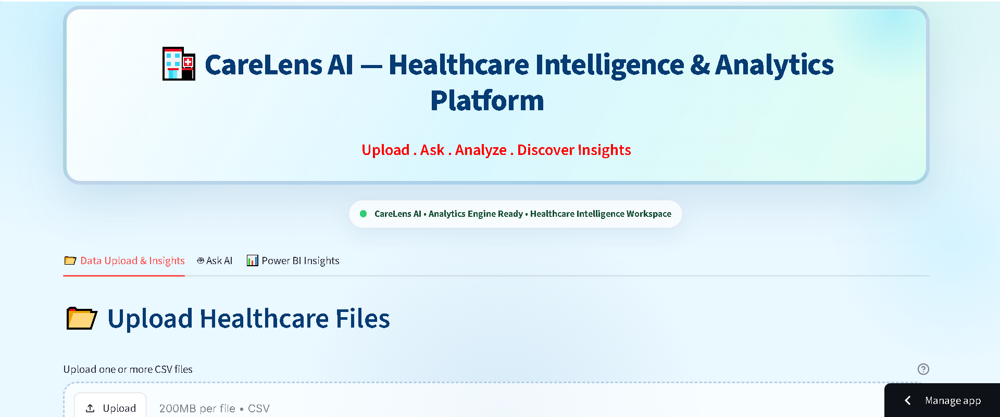

01
CareLens AI - AI Powered Healthcare Analytics & BI Platform
CareLens AI is an end-to-end healthcare analytics project that combines Snowflake, SQL, Python, Power BI, Streamlit, and OpenRouter to transform healthcare data into meaningful business insights.The project analyzes data related to patients, encounters, procedures, organizations, and payers. It includes interactive Power BI dashboards and an AI-powered Streamlit application where users can upload healthcare data and ask questions using natural language.